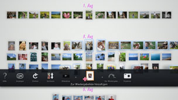

Erstellen einer Wiedergabeliste mit ausgewählten Fotos
Sie können Fotos auswählen und daraus eine Wiedergabeliste erstellen. Mit einer Wiedergabeliste können Sie die ausgewählten Fotos jederzeit in der darin festgelegten Reihenfolge anzeigen lassen.
Erstellen einer Wiedergabeliste
1. |
Wählen Sie aus dem [Bibliothekbereich] ein Foto aus, das Sie in die Wiedergabeliste aufnehmen möchten, drücken Sie die  |
||||||||||||
|---|---|---|---|---|---|---|---|---|---|---|---|---|---|
2. |
Wechseln Sie mit dem linken Stick in einen leeren Bereich im [Wiedergabelistebereich] und drücken Sie die |
||||||||||||
3. |
Für die Wiedergabeliste können Sie folgende Optionen festlegen.
|
 (Zur Wiedergabeliste hinzufügen).
(Zur Wiedergabeliste hinzufügen). -Taste.
-Taste.
 (Musik) auf dem XMB™-Bildschirm.
(Musik) auf dem XMB™-Bildschirm.Anmerkungen
- Die Einstellungen für eine Wiedergabeliste können Sie im Nachhinein unter
 (Bearbeiten) ändern.
(Bearbeiten) ändern. - Jede Wiedergabeliste kann eigene Einstellungen haben.
Hinzufügen von Fotos zu einer Wiedergabeliste
1. |
Wählen Sie die Fotos aus, die Sie in die Wiedergabeliste aufnehmen möchten, drücken Sie die |
|---|---|
2. |
Wählen Sie die Wiedergabeliste aus und drücken Sie die |
Bearbeiten von Einstellungen für eine Wiedergabeliste
Sie können die Einstellungen für Wiedergabelisten bearbeiten. Wählen Sie die Wiedergabeliste aus, deren Einstellungen Sie bearbeiten möchten, drücken Sie die  -Taste und wählen Sie dann (Bearbeiten).
-Taste und wählen Sie dann (Bearbeiten).
Verschieben einer Wiedergabeliste
Sie können Wiedergabelisten an eine andere Stelle verschieben. Wählen Sie die Wiedergabeliste aus, die Sie verschieben möchten, drücken Sie die -Taste und wählen Sie dann  (Verschieben). Nun können Sie die Wiedergabeliste mit dem linken Stick verschieben.
(Verschieben). Nun können Sie die Wiedergabeliste mit dem linken Stick verschieben.
Anmerkung
Sie können eine Wiedergabeliste auch verschieben, ohne auf das Menü zuzugreifen. Wählen Sie die Wiedergabeliste aus, halten Sie die  -Taste gedrückt und verschieben Sie die Wiedergabeliste mit dem linken Stick.
-Taste gedrückt und verschieben Sie die Wiedergabeliste mit dem linken Stick.
Löschen einer Wiedergabeliste
Wählen Sie die Wiedergabeliste aus, die gelöscht werden soll, drücken Sie die -Taste und wählen Sie  (Löschen).
(Löschen).